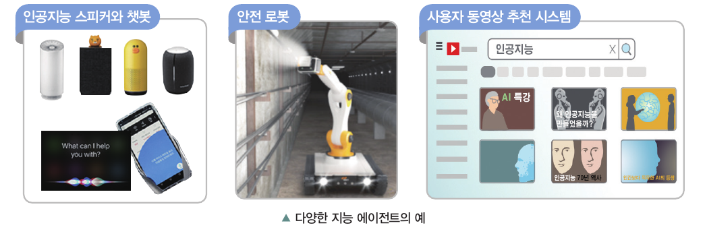
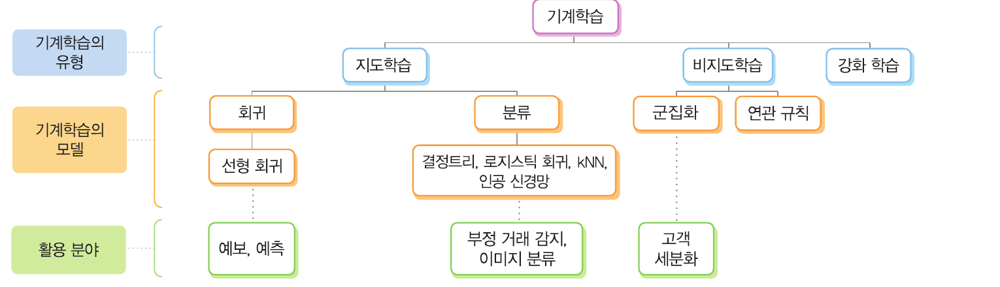
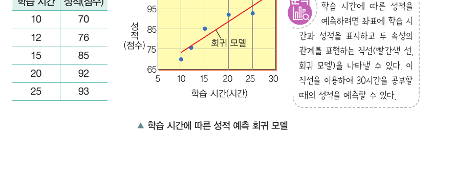
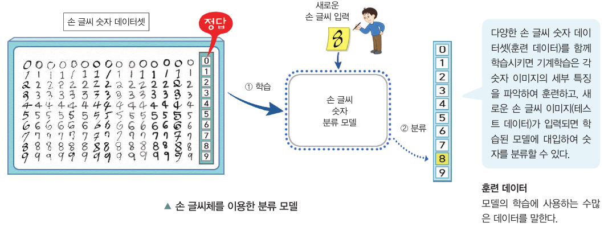
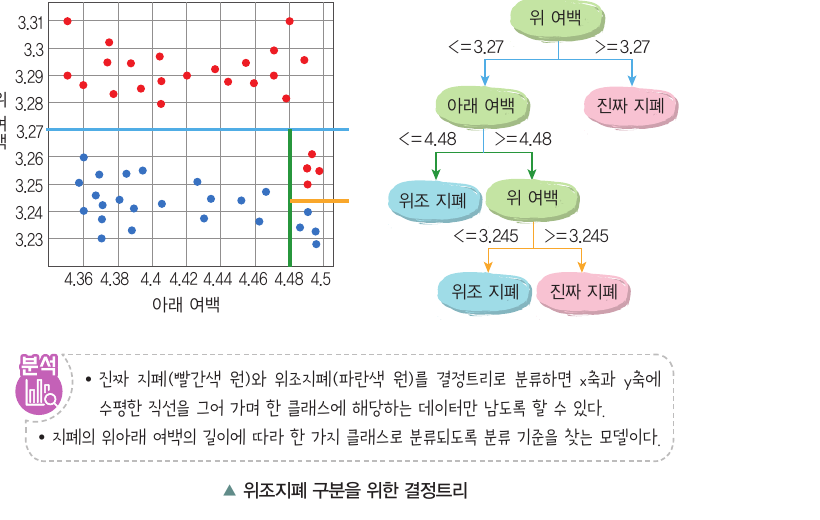
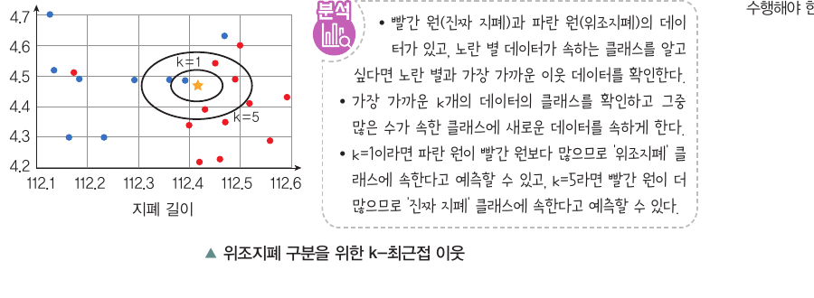
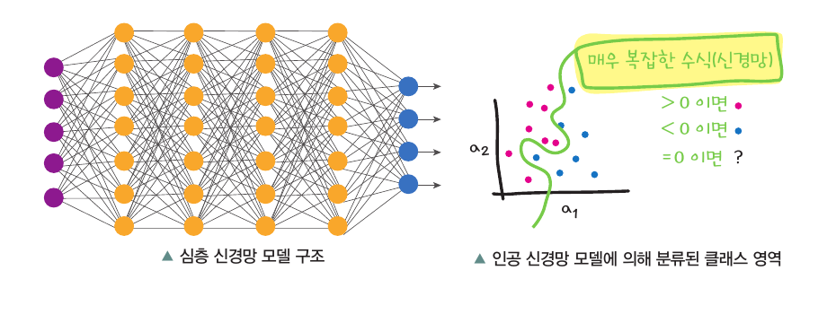
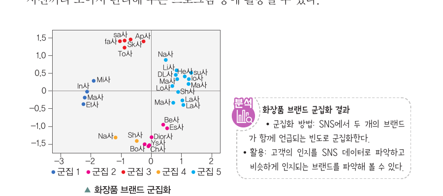
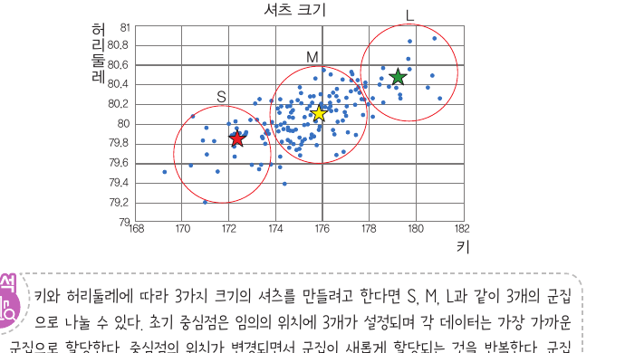
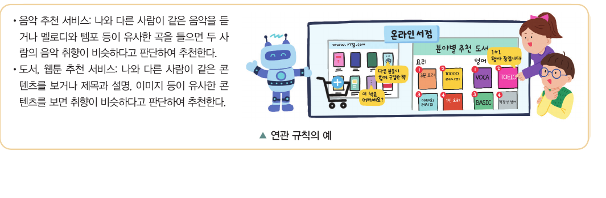

정의
인식, 학습, 추론, 문제 해결, 언어 구사 등 사람의 지능적인 판단과 결정을 컴퓨터 소프트웨어로 구현하는 것
01
p.174
사람의 지능적인 판단과 결정을 컴퓨터 소프트웨어로 구현하는 기술
인식, 학습, 추론, 문제 해결, 언어 구사 등 사람의 지능적인 판단과 결정을 컴퓨터 소프트웨어로 구현하는 것
02
p.175
주어진 환경과 상호 작용하며 목적을 위해 행동하는 시스템
누군가를 대신하여 주어진 환경과 상호 작용하며 어떤 목적을 위해 자율적으로 행동하는 시스템
학습과 추론으로 스스로 행동을 개선하거나 새로운 규칙과 전략을 만들어 상황에 효과적으로 대응하는 시스템
03
p.176
외부 환경을 인지하고 판단한 뒤 적절한 행동을 반복한다
외부 환경 인지
상황 판단
행동 결정
적절한 행동
이 과정을 반복하여 주어진 목적을 달성한다.
04
p.177
인공지능 서비스와 제품은 지능 에이전트의 형태로 활용된다

05
p.180
컴퓨터가 수많은 데이터로 학습하여 예측과 분류 같은 판단을 수행한다
사람의 학습 능력을 컴퓨터로 구현하는 인공지능 기술
컴퓨터가 수많은 데이터로 학습하여 모델을 만들고
이 모델에 새로운 데이터를 적용하여
예측과 분류 같은 지능적인 판단을 할 수있다.
06
p.181~182
정답 데이터의 유무와 보상 경험에 따라 학습 방식이 달라진다
입력과 정답 데이터로 학습한다.
정답이 없는 데이터에서 패턴이나 구조를 찾는다.
시행착오와 보상으로 더 나은 행동을 학습한다.
07
p.184
기계학습의 유형, 모델, 활용 분야

08
p.184~185
연속적인 수치형 데이터를 예측하는 지도학습 방법
입력값과 결괏값의 관계를 나타내는 함수를 만들고, 새로운 값이 입력되면 그 함수를 이용하여 값을 예측한다.

09
p.185
입력 데이터가 미리 정의된 범주 중 어디에 해당하는지 정한다
둘 이상의 범주(클래스)를 구분하는 경계를 학습하고, 새로운 데이터가 어떤 클래스에 속하는지 판단한다.

10
p.186
특징의 기준값을 비교하며 데이터를 하위 그룹으로 나눈다
트리의 루트에서부터 각 분기마다 특징에 대한 분류 기준을 만들어 데이터를 분류하는 방법이다.

11
p.187
클래스에 속할 확률을 예측하고 가능성이 높은 클래스로 분류한다
12
p.187
가까운 이웃 데이터의 클래스를 보고 새로운 데이터를 분류한다
새로운 데이터가 들어왔을 때 k개의 가까운 이웃 데이터의 클래스를 확인하고, 더 많은 수가 속한 클래스로 분류한다.

13
p.188
사람의 뇌 신경계가 정보를 처리하는 방식을 모방한 모델
수많은 노드가 연결되어 신호를 주고받도록 하며, 연결이 깊어질수록 더 복잡한 문제를 해결할 수 있다.

14
p.188
정답이 없는 데이터에서 비슷한 특징을 가진 데이터끼리 그룹화한다
같은 군집에 속하는 데이터는 서로 비슷하고, 다른 군집에 속하는 데이터는 차이가 크게 나도록 나눈다.

15
p.189
주어진 데이터를 k개의 군집으로 묶는 비지도학습 방법
군집의 중심점을 설정하고 각 데이터를 가장 가까운 중심점에 할당한 뒤, 중심점이 바뀌지 않을 때까지 반복한다.

16
p.189
데이터 항목들 간의 연관성을 찾는다
거래 데이터에서 구매 항목 사이의 관련성을 분석하여 규칙을 발견하고, 추천이나 상품 배치에 활용한다.

1 / 4